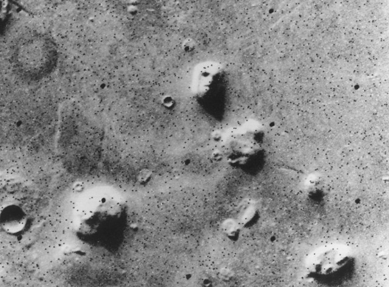

Evidence of discretization in conscious perception.

The Cydonis "Face on Mars", imaged by the Viking 1 orbiter in 1976 (NASA, public domain image).
Pareidolia (erroneous pattern recognition) can be more likely at low resolution (see above) or at higher resolution (think about seeing images in wood grain patterns and other high-resolution textures).
Crevier and Meister demonstrated bifurcation and period doubling in retinal responses to flickering light in salamander retinas, producing curves that superificially look just like the logistic map. (1998)
Aliasing, mentioned earlier, is often apparent in video with spinning wheels or rotors. But the so-called "wagon-wheel effect" can also be perceived directly under continuous illumination (Purves et al. 1996; Andrews and Purves 2005).
Work by VanRullen and others reveal discretization effects under the influence of drugs or injury (Dubois and VanRullen 2011), and a role in brain waves establishing periodicity underlying various illusions.
An engaging review from 2004, by Oliver Sacks, includes examples of freeze-frame and cinematographic vision from his patients as well as historical views: In the River of Consciousness, later adapted as a chapter in his posthumous collection The River of Consciousness.